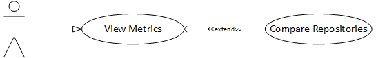

4. OSS Community¶
4.1. Background¶
Open source community leaders want to understand their communities’ health and sustainability to manage them strategically. Health and sustainability metrics provide community leaders with a tool to measure the effectiveness of interventions and initiatives as well as to identify areas of improvement.
4.2. Description¶
The user (leader) provides a URL to a GitHub repository for a community that she manages. The software returns metrics that indicate the health and sustainability of the repository.
4.3. Triggers (What prompts the use case to start?)¶
- A user (leader) seeks to understand the current health and sustainability of a repository to devise actions.
4.4. Actors (Who is involved?)¶
- User
4.5. Preconditions (This includes things like “data loaded”. Or, project is flagged as “of interest”; etc.)¶
- User provides URL to a GitHub repository
4.6. Main Success Scenario¶
- All metrics that can be computed from the provided repository are displayed.
4.7. Alternate Success Scenarios¶
- N/A
4.8. Failed End Condition¶
- The provided URL points to a non-existent GitHub repository, metrics cannot be calculated, and an error message explaining the condition is shown to user.
4.9. Extensions¶
- Compare metrics between repositories.
4.10. Steps of Execution (Requirements)¶
- The use enters and submits the URL to a GitHub repository.
- Metrics computed from the provided repository are displayed.
4.11. Dependent Use Cases¶
- N/A
4.12. A use case diagram, following the UML Standard for expressing use cases.¶
